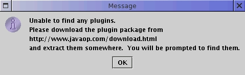
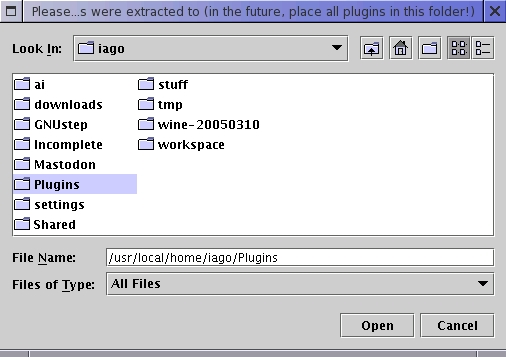
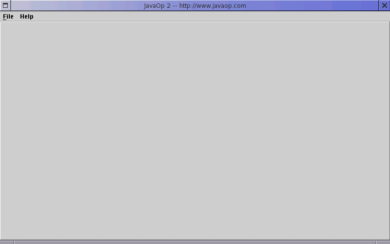
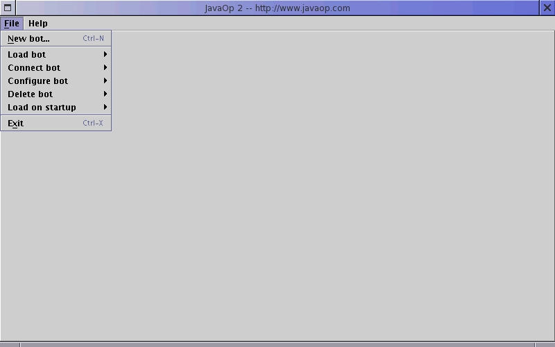
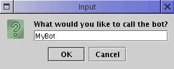
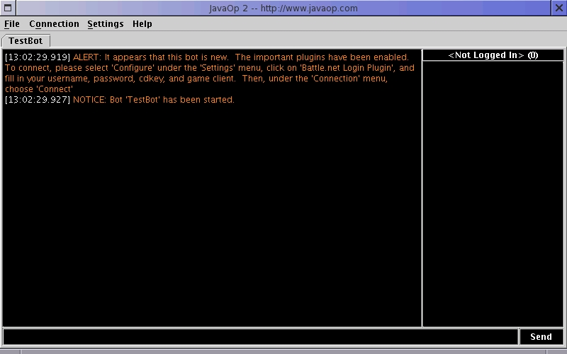
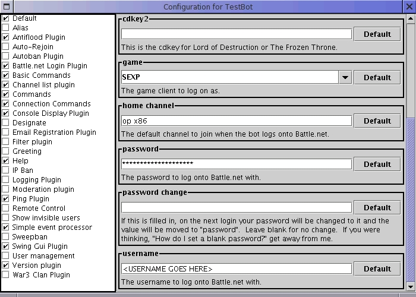
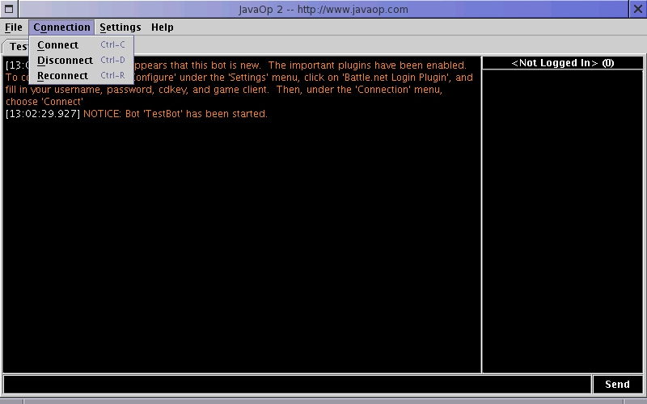

_ ___
| | __ ___ ____ _ / _ \ _ __
_ | |/ _` \ \ / / _` | | | | '_ \
| |_| | (_| |\ V / (_| | |_| | |_) |
\___/ \__,_| \_/ \__,_|\___/| .__/
|_|
Download
The first thing you need to do is download the latest core and plugins. They can be unzipped to seperate folders, and it doesn't matter where they are. Once they're unzipped, you should have a bunch of .jar files.
Running .jar Files
If Java is installed properly, you should be able to double-click the core .jar files to bring up the configuration and plugin management. If you find that .jar files are associated with WinRar, open up WinRar and go into the configuration. Find the "associations" page and unclick ".jar". If you still can't double-click .jar files, you probably need to install Java. For more information, see Sun's Download Page, and get the "J2SE 1.5.0 JRE". Once that's installed, you should be able to double-click the .jar files to run them. If you wish to run the .jar files off a commandline, on any platform, use the command "java -jar Jarfile.jar".
Starting the bot
Note: this tutorial was written for JavaOp2 beta 26. It should still apply to newer versions. It does NOT apply to older versions.
Double click JavaOp2.jar to run it. You will likely be prompted to find the plugins:

Press "Ok", and find the folder where you extracted the plugins to:

You'll then be presented with a blank bot:

Under the "File" menu, choose "New bot..." (or press control-n):

You'll be prompted for a name. Give it one:

The bot should load up and give you a Warning:

Next, you have to fill in your account information.
Under the "settings" menu, choose "configure" (or press control-f). When the settings come up, in the
left column, click on "Battle.net Login Plugin." Fill in your username, password, and cdkey, and choose which
game client you want to use to connect:

You can change other settings or add plugins if you'd like. Generally, the default settings aren't too bad.
When you're done all that, close the settings and make sure you save. Then, under the "Connection" menu,
click "Connect":

The Files
In this section, I'm going to explain the various files, their format, and what they are used for. If you are working through a shell with no graphical interface, you will need to edit these by hand. Or if you just don't like gui utilities. When you see a file like <botname>.jbb, replace <botname> with the name of the bot, such as mybot.jbb. All files are located in your home folder, in a directory called ".javaop2". On Linux, this would be "/home/<username>/.javaop2/", and on Windows it would be "C:\Documents and Settings\<username>\.javaop2\". The reason for this is that it lets you move the bot, or reinstall the bot, or let seperate users use the bot without having to share your data files.
All information on this page is public domain. If for any reason you want to copy/use this, feel free and have fun. All software and source directly distributed by me is public domain, and may be used in any way. Any copyrights I use (Particularely Starcraft, Brood War, Diablo, Warcraft, and Blizzard) are copyrights of their respective owners (in this case, Blizzard). Please respect all copyrights, and enjoy any public domain source code and software.